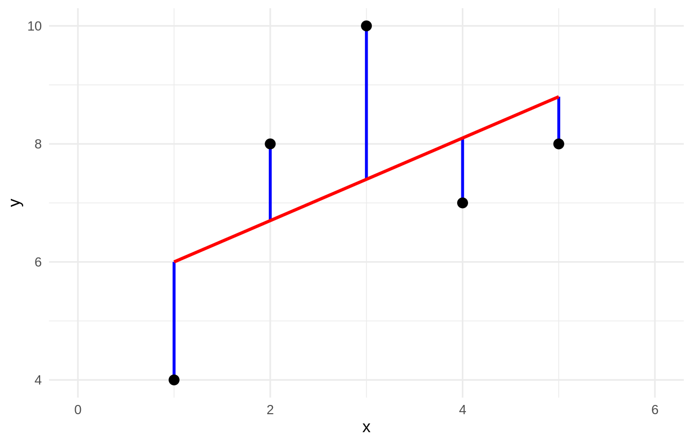

We begin with a simple bivariate (two variable) model with one outcome and one predictor. The reason we start with this basic model is to help new users understand the output and details without adding too many other details into the mix. So, we start with the easiest model - the bivariate regression model.
15.1 Learning Objectives
Understand the purpose of the model.
Learn how to interpret the output of a bivariate regression model.
Understand how to use the model to make predictions.
Learn how to evaluate the model’s performance.
15.2 A Little History (You Can Skip It, But Don’t)
Regression is old. Adrien-Marie Legendre published the method of least squares in 1805, and Carl Friedrich Gauss claimed he had been using it since 1795 (priority disputes like this are common in the history of mathematics). But the word regression comes from Sir Francis Galton, who in 1885 noticed that the tall sons of tall fathers tended to be a little shorter than their fathers, and the short sons of short fathers a little taller, both regressing toward the mean. Yule (1897) and Pearson (1903) took Galton’s idea and gave us the machinery we still use today.
Why do we tell you this? Because regression was invented to answer an honest, human question: if I know something about you (X), what is my best guess about something else (Y)? That is the whole game. Everything below is just bookkeeping in service of that one question.
15.3 The Model
A regression model is a claim that one variable is a function of another:
\[Y = f(X)\]
For the simple linear case, that function is a straight line:
\[y = bx + a\]
where \(b\) is the slope (how much \(y\) changes for a one-unit change in \(x\)) and \(a\) is the intercept (the value of \(y\) when \(x = 0\)). You may have seen this in algebra class as \(y = mx + b\); statisticians use different letters for the same idea.
Let’s make some data and look at it. We will keep it tiny - five points - so you can check every number by hand.
Figure 15.1: Five points, few enough that every number in this chapter can be checked by hand.
Now we fit the model. In R, the workhorse is lm() (for linear model). The formula y ~ x reads “y is predicted by x.”
NoteWorking in SPSS, Julia, or Python?
The code tabs below assume this chapter’s data is already loaded. Grab the one-file setup for your language from Getting the Book’s Data, run it once, then load what you need by name - this chapter uses ch14-toy. For example, book_data("ch14-toy") in R, Julia, or Python, or !bookdata name = "ch14-toy". in SPSS. Every language reads the same shipped files, so your numbers will match the ones printed here exactly.
import pandas as pddf = pd.read_csv("data/sim/ch14-toy.csv")import statsmodels.formula.api as smfm1 = smf.ols("y ~ x", data=df).fit()m1.summary()
/home/runner/work/GradStats-Book/GradStats-Book/.venv/lib/python3.12/site-packages/statsmodels/stats/stattools.py:74: ValueWarning: omni_normtest is not valid with less than 8 observations; 5 samples were given.
warn("omni_normtest is not valid with less than 8 observations; %i "
<class 'statsmodels.iolib.summary.Summary'>
"""
OLS Regression Results
==============================================================================
Dep. Variable: y R-squared: 0.255
Model: OLS Adj. R-squared: 0.007
Method: Least Squares F-statistic: 1.028
Date: Wed, 05 Aug 2026 Prob (F-statistic): 0.385
Time: 10:52:54 Log-Likelihood: -9.7217
No. Observations: 5 AIC: 23.44
Df Residuals: 3 BIC: 22.66
Df Model: 1
Covariance Type: nonrobust
==============================================================================
coef std err t P>|t| [0.025 0.975]
------------------------------------------------------------------------------
Intercept 5.3000 2.290 2.315 0.104 -1.987 12.587
x 0.7000 0.690 1.014 0.385 -1.497 2.897
==============================================================================
Omnibus: nan Durbin-Watson: 1.843
Prob(Omnibus): nan Jarque-Bera (JB): 0.535
Skew: 0.411 Prob(JB): 0.765
Kurtosis: 1.624 Cond. No. 8.37
==============================================================================
Notes:
[1] Standard Errors assume that the covariance matrix of the errors is correctly specified.
"""
R just handed us a slope and an intercept. Here is what matters most in this book: do not trust the machine until you can reproduce what it did. The rest of this chapter rebuilds every number in that output by hand. If you can do that, you understand regression, rather than just knowing how to type summary().
15.4 What “Best” Means: Residuals
The red line is “best” in a very specific sense. For each point, the residual is the vertical distance between what we observed (\(y\)) and what the line predicts (\(\hat{y}\)):
\[e = y - \hat{y}\]
Let’s draw those distances.
augment(lm1) |># broom adds .fitted and .resid as columnsggplot(aes(x = x, y = y)) +geom_segment(aes(xend = x, yend = .fitted), colour ="blue", linewidth =1) +geom_smooth(method ="lm", se =FALSE, colour ="red") +geom_point(size =3) +coord_cartesian(xlim =c(0, 6)) +theme_book()

Figure 15.3: The residuals drawn as vertical segments. Least squares is the line that makes the sum of their squares as small as it can be.
Here are the residuals themselves:
augment(lm1) |>select(x, y, .fitted, .resid) |>round2()
x
y
.fitted
.resid
1
4
6.0
-2.0
2
8
6.7
1.3
3
10
7.4
2.6
4
7
8.1
-1.1
5
8
8.8
-0.8
Two facts worth burning into memory:
augment(lm1) |>summarise(sum_of_residuals =sum(.resid), # (essentially) zerosum_of_squared_residuals =sum(.resid^2) # this is what we minimize ) |>round2()
sum_of_residuals
sum_of_squared_residuals
0
14.3
ImportantLeast Squares, Defined
The “best” line is the one line (out of infinitely many possible lines) that makes sum(resid^2) as small as it can possibly be. That is all “least squares” means: least (smallest) squares (of the residuals). The residuals sum to zero for any line through the means, so we cannot minimize their plain sum - it is always zero. Squaring first solves that, and it punishes big misses more than small ones. We shall return to that squared quantity again and again; it is central to everything that follows.
15.5 Solving for the Slope and Intercept by Hand
R did not use magic. It used two formulas. Here is the slope:
N <-nrow(toy)b <- toy |>summarise(b = (N *sum(x * y) -sum(x) *sum(y)) / (N *sum(x^2) -sum(x)^2)) |>pull(b)tibble(b = b) |>round2()
b
0.7
Compare that b to the slope in the summary(lm1) output above. Same number. Good.
Once we have the slope, the intercept falls right out. The least-squares line always passes through the point \((\bar{x}, \bar{y})\) - the “center of mass” of the data - so we can substitute the means and solve:
\[a = \bar{y} - b\bar{x}\]
a <- toy |>summarise(a =mean(y) - b *mean(x)) |>pull(a)tibble(a = a) |>round2()
a
5.3
There is a more cryptic-looking version that is algebraically identical:
a <- toy |>summarise(a = (sum(y) - b *sum(x)) / N) |>pull(a)tibble(a = a) |>round2()
a
5.3
NoteWhy are those two the same?
Because \(\bar{y} = \frac{\sum y}{N}\) and \(\bar{x} = \frac{\sum x}{N}\). Substitute those into \(a = \bar{y} - b\bar{x}\), put everything over the common denominator \(N\), and you land on the second formula. Try it with a pencil. Do it once and these “scary” formulas lose their power to intimidate, because you will see they are usually just a tidy version of something simple.
15.6 Quantifying Our Uncertainty: Standard Errors
We have a slope and an intercept. But this is a statistics book, and the entire point of statistics is to quantify our uncertainty. How wrong might these estimates be? For that we need standard errors, and they all start from one quantity: the standard error of estimate (also called \(S_{xy}\) or \(S_{ee}\)), which is basically the typical size of a residual:
That is the Residual standard error line in the summary() output. From it we get the standard error of the slope and of the intercept:
ses <- toy |>summarise(Sb = Sxy /sqrt(sum((x -mean(x))^2)), # SE of the slopeSa = Sxy *sqrt(sum(x^2) / (N *sum((x -mean(x))^2))) # SE of the intercept )ses |>round2()
Sb
Sa
0.69
2.29
Now the payoff. A \(t\) statistic is just an estimate divided by its own standard error, and we compare it to a \(t\) distribution with \(N-2\) degrees of freedom:
tibble(slope = b, SE = ses$Sb) |>mutate(t = slope / SE,p =2*pt(-abs(t), df = N -2) ) |>mutate(p =fmt_p(p)) |>round2()
slope
SE
t
p
0.7
0.69
1.01
0.385
Look back at the x row of summary(lm1). The estimate, the standard error, the \(t\) value, the \(p\) value: we just rebuilt the entire regression table from scratch. That is the main lesson of the chapter: R is a fast calculator, not an oracle, and you now understand every number it produced.
NoteFrom the Mailbag (a real question from PSYC 754)
“When calculating the standard error of estimate and the standard error of \(b\), why are the calculations for the degrees of freedom different? (I.e., standard error of estimate \(N-2\) but standard error of \(b\)\(N-1\).)”
Sharp catch, and the honest answer is that they should not be different. There is only one rule here: the degrees of freedom equal \(N\) minus the number of parameters you estimated. In simple regression you estimate two (a slope and an intercept), so every standard error in this chapter - the estimate, the slope, the intercept - rests on the same \(N-2\). If a formula sheet ever shows \(N-1\) for the SE of \(b\), that is a slip, not a second rule. (When we add predictors in the next chapter, that same one rule becomes \(N-k-1\).)
NoteAnother route to the slope’s uncertainty: bootstrap it
The standard-error formula above assumes normal, equal-variance errors. When you doubt that, you can skip the formula entirely and bootstrap the slope: resample your rows with replacement a few thousand times, refit lm() each time, and read the SE and a 95% interval straight off the spread of the resampled slopes - no distributional assumption required. Same slope, an honest interval. See Beyond the Normal Curve.
15.7 The Meaning of the Slope (Mind Your Units)
Students memorize “b is the change in y per unit change in x” and then promptly forget to interpret it. Units are your friend here. Suppose \(x\) is height in inches and \(y\) is weight in pounds:
\(b\) is measured in lbs per inch (rise over run: \(\frac{\text{lbs}}{\text{inches}}\))
\(a\) is measured in lbs
so the equation reads: \(y\ (\text{lbs}) = \frac{\text{lbs}}{\text{inches}} \times \text{inches} + \text{lbs}\), i.e. \(\text{lbs} = \text{lbs} + \text{lbs}\) ✓
The units have to balance, and checking them is a free error-detector. If your slope came out in the wrong units, you did something wrong. This is a habit engineers use constantly, and it is worth adopting.
15.8 Standardized Coefficients
Sometimes we want a slope that does not depend on the units at all - so we can compare predictors measured on wildly different scales. We get it by standardizing both variables (converting each to a z-score) before fitting. When both variables are standardized, the intercept is zero by construction, so we drop it with - 1:
toy_z <- toy |>mutate(across(c(x, y), \(v) (v -mean(v)) /sd(v)))lm2 <-lm(y ~ x -1, data = toy_z)tidy2(lm2)
term
estimate
std.error
statistic
p.value
x
0.51
0.43
1.17
0.307
INSERT FILE='data/sim/ch14-toy.sps'.
* SPSS prints the standardized Beta in the coefficients table by default,
* so the ordinary regression yields the standardized slope with no extra steps.
REGRESSION
/STATISTICS COEFF R ANOVA
/DEPENDENT y
/METHOD=ENTER x.
Model Summary (y)
+---+--------+-----------------+--------------------------+
| R |R Square|Adjusted R Square|Std. Error of the Estimate|
+---+--------+-----------------+--------------------------+
|.51| .26| .01| 2.18|
+---+--------+-----------------+--------------------------+
ANOVA (y)
+----------+--------------+--+-----------+----+----+
| |Sum of Squares|df|Mean Square| F |Sig.|
+----------+--------------+--+-----------+----+----+
|Regression| 4.90| 1| 4.90|1.03|.385|
|Residual | 14.30| 3| 4.77| | |
|Total | 19.20| 4| | | |
+----------+--------------+--+-----------+----+----+
Coefficients (y)
+----------+----------------------------+-------------------------+----+----+
| | Unstandardized Coefficients|Standardized Coefficients| | |
| +-----------+----------------+-------------------------+ | |
| | B | Std. Error | Beta | t |Sig.|
+----------+-----------+----------------+-------------------------+----+----+
|(Constant)| 5.30| 2.29| .00|2.31|.082|
|x | .70| .69| .51|1.01|.385|
+----------+-----------+----------------+-------------------------+----+----+
usingCSV, DataFramesdf = CSV.read("data/sim/ch14-toy.csv", DataFrame)usingGLM, Statisticsz(v) = (v .-mean(v)) ./std(v)df2 =DataFrame(y =z(df.y), x =z(df.x))lm2 =lm(@formula(y ~ x -1), df2)coeftable(lm2)
import pandas as pddf = pd.read_csv("data/sim/ch14-toy.csv")import statsmodels.formula.api as smfdef z(v):return (v - v.mean()) / v.std()d2 = df.assign(zy=z(df.y), zx=z(df.x))smf.ols("zy ~ zx - 1", data=d2).fit().summary()
/home/runner/work/GradStats-Book/GradStats-Book/.venv/lib/python3.12/site-packages/statsmodels/stats/stattools.py:74: ValueWarning: omni_normtest is not valid with less than 8 observations; 5 samples were given.
warn("omni_normtest is not valid with less than 8 observations; %i "
<class 'statsmodels.iolib.summary.Summary'>
"""
OLS Regression Results
=======================================================================================
Dep. Variable: zy R-squared (uncentered): 0.255
Model: OLS Adj. R-squared (uncentered): 0.069
Method: Least Squares F-statistic: 1.371
Date: Wed, 05 Aug 2026 Prob (F-statistic): 0.307
Time: 10:53:11 Log-Likelihood: -5.8002
No. Observations: 5 AIC: 13.60
Df Residuals: 4 BIC: 13.21
Df Model: 1
Covariance Type: nonrobust
==============================================================================
coef std err t P>|t| [0.025 0.975]
------------------------------------------------------------------------------
zx 0.5052 0.432 1.171 0.307 -0.693 1.703
==============================================================================
Omnibus: nan Durbin-Watson: 1.843
Prob(Omnibus): nan Jarque-Bera (JB): 0.535
Skew: 0.411 Prob(JB): 0.765
Kurtosis: 1.624 Cond. No. 1.00
==============================================================================
Notes:
[1] R² is computed without centering (uncentered) since the model does not contain a constant.
[2] Standard Errors assume that the covariance matrix of the errors is correctly specified.
"""
This standardized slope is the beta weight (\(\beta\)). In the bivariate case it equals the correlation between \(x\) and \(y\) - a fact worth remembering, and one we will lean on heavily when we get to multiple predictors (Aiken 2002).
15.9 A Real Example
Five points are great for hand calculation but a little silly. Let’s use a real dataset - one of ours, from years of teaching this material: the high-school and college GPAs (plus SAT scores and letter-of-recommendation quality) of 100 students. Does high-school GPA predict college GPA?
Interpret it out loud: for every one-point increase in high-school GPA, college GPA is predicted to rise by the slope you see above (in GPA-points per GPA-point). Real data are messier than the toy five points - the scatter is wider, the fit imperfect - but the machinery is identical, and you now know how to read every number in that summary, and how uncertain each one is. (Hold onto this dataset; we bring back its other columns - SAT and recommendation quality - when we add predictors in the next chapter.)
15.10 Challenge
TipDo One Yourself
Take the five-point toy data (x and y) from the top of this chapter and, without calling summary(), calculate by hand (in R, using the formulas above):
the slope \(b\) and intercept \(a\),
the standard error of each,
the \(t\) statistic for the slope, and
the \(p\) value associated with that \(t\).
Then run summary(lm(y ~ x)) and confirm every number matches. Be sure you can interpret each value in a sentence a non-statistician would understand. If you can do that, you have mastered simple regression and you are ready for more than one predictor.
15.11 Where We Go Next
Everything here generalizes. Add a second predictor and \(y = bx + a\) becomes \(y = b_1x_1 + b_2x_2 + a\) - the plane instead of the line. The logic (minimize the squared residuals, then quantify our uncertainty about each coefficient) does not change one bit. That is the subject of the next chapter, Multiple Regression. For a deeper, book-length treatment of everything we introduce here and there, the classic reference is Cohen, Cohen, West, and Aiken (Aiken 2002); for a gentler modern companion, see Lewis-Beck and Lewis-Beck (Lewis-Beck and Lewis-Beck 2024).
Aiken, Stephen G. West, Patricia Cohen. 2002. Applied MultipleRegression/CorrelationAnalysis for the BehavioralSciences. 3rd ed. Routledge. https://doi.org/10.4324/9780203774441.
Lewis-Beck, Colin, and Michael Lewis-Beck. 2024. Applied Regression: AnIntroduction. Second Edition. Thousand Oaks, California. https://doi.org/10.4135/9781483396774.